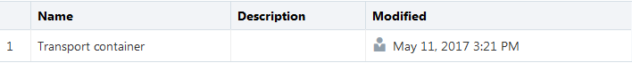

This 10-minute tutorial shows you how to create a device model in Oracle Internet of Things (IoT) Cloud Service and associate the device model with the Oracle IoT Asset Monitoring Cloud Service application.
Background
In Oracle IoT Cloud Service, you can create a device model by using one of the following methods. In this tutorial, you create a device model with the cURL tool.
The cURL tool
An instance of Oracle IoT Cloud Service
In a browser, a Representational State Transfer (REST) client plug-in
What Do You Need?
A desktop or laptop computer running Microsoft Windows 8, Apple macOS 10.9 or later, or Linux with a web browser and Java Development Kit (JDK) 1.8 or later
In a command-line interface, replace iot_user_name, iot_password, transport_container_file_path, and myinstance-myidentitydomain with your corresponding values.
In a web browser, enter the URL for your Oracle IoT Cloud Service instance, enter your user name and password, and then click Sign In.
On the Oracle IoT Cloud Service home page, click Action ,
select Devices, select Model, and then verify that
your device model is listed in the table.

Description of the illustration devices_table.png
Associate a Device Model with an Application
Click Action
and select Applications. From the Applications
menu, select Browse Applications.
 Configure a Device Model
Configure a Device Model Before You Begin
Before You Begin Create a Device Model
Create a Device Model Associate a Device Model with an Application
Associate a Device Model with an Application